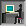
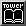
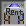
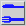
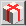
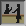
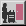
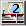
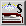

収入には4つあります。
ゲームを始めた状態で所持している金額です。もちろん最低限の金額しか所有していません。この資金のみに頼ってビルを建設していくことは不可能です。 又、この資金を有効に使わなかった場合赤字経営に陥って事実上の倒産となってしまいますのでテナントの配置にはくれぐれも注意しましょう。
| 新宿MAP | 10億円 |
| ハワイMAP | 5億円 |
| 華厳の滝MAP | 2億円 |
イベントによる資金収入です。イベントは不定期なもののためにこれを当てにしてビルを建設していくことは不可能です。
| 地価での財宝発見 | 1〜5億円 |
デバックモードにした場合に出るボーナス500億円のことです。
| デバックモード | 500億円 |
設置したテナントによる収入です。これを当てにしてTowerを拡張していくことになります。上の二つとは違って偶然に発生するものではなく自主的に 稼ぎ出すものです。ここのバランスによって赤字か黒字かがきまります。
固定収入とは3ヶ月（四半期）に一遍、決まった額の収入があるタイプです。このタイプのアイテムは設置すればするほど収入が増えます。そのため初期のTowerではこのタイプのアイテムに頼ることが多いでしょう。気をつけなくてはいけないのはこのタイプのアイテムを設置したとしても住人が入っていなかったり、評価が低すぎて空き部屋となってしまった場合、そのアイテムの固定収入は0となって今います。そのためテナントの評価を恒久的に維持いるがするために維持費も多くかかる場合があります。Tower後半の場合、ビルが上に伸びているために人の移動の維持費が多くなるためにあまり高層には設置することをお勧めしません。
|  | オフィス | 30万/3ヶ月/個 |
|  | Tower2開発室 | 40万/3ヶ月/個 |
|  | 賃貸住宅 | 7万/3ヶ月/個 |
| 広告 | 500万/1年/個 |
臨時収入とは「売るきり」のことで設置した費用よりも高い費用で住民に売るものです。性格上マンションなどの住民が居住するものとなります。売り切りの場合、 売った時点で収入が入るため、その後テナントには干渉できません。また収入元にもならずいわば住人と引き換えに一時金を得ることを目的としたものと考えていいでしょう。もちろん入居時にはある程度の資金ははいるわけですが、ビル自体の収入にはなりませんから維持費がかかり、売った時期から資金が減り続ける状態となります。またこの資金を当てにしてビルを拡張していき、ある時点でそのテナントを撤去することになった場合には重大な問題が起こる可能性があります。それは入居時にもらった資金を退去時に支払はなくてはならない点です。これにより5〜6戸を壊すと1億円ほどの戻し金を支払わなくてはならなくなってしまいます。これは評価が悪くて住民が出て行ったときも同じですから、後半時には固定収入テナントと同じように高層に立てられることはまずありません。
| 分譲住宅 | 1500万 | |
| コンドミニアム | 1500万 |
月別収入とは、Towerの時間では一ヶ月、私たちユーザーには時計が一回転する時間、すなわち一日それぞれの収益の違いがあるものです。いわば固定収入に対して不固定収入というものになります。このタイプは赤字になるかならないかでさらに2つに分けられます。
このテナントの大きな特徴は維持費と収入のバランスが決められていないところです。ほかのテナントとは違い、収入が維持費を上回ると黒字、下回ると赤字となります。この差額がその日の収入となります。つまり維持費10万の店で8万売るあげたとしてその店全体で見るとー2万円の収入、2万円の赤字となります。逆に200万の維持費が必要であっても250万の売り上げがあった場合は50万円の黒字となります。このように維持費が多いからといって赤字になったり、少ないから儲かるといったものではありません。用はいかにたくさんの人をテナントに呼び込めるかであり、維持費はあまり関係がありません。一般的に多く人を集めるところは通個量と比例し、多いほうが客が多く入り、黒字になります。しかしそれだけではありません。ごく一部のテナントは通行料の多い場所においても儲からない場合があります。これは客単価が問題であり、たとえばフランス料理店や寿司屋を地下鉄＞ロビー間などにおいてもあまり客は入りません。答えは皮肉でその間の客はその店に入るだけの金を持っていないからです。逆に通行料は少なけれどもロビー＞ホテル間の客は金を持っているため利益を上げることができることもあります。詳しくは通行量の章を参照してください。
|  | レストラン | |
|  | ショップ |
このテナントはホテルテナントのみです。ホテルの場合、普通のテナントとは管理が少し違い、フロントと呼ばれるテナントで部屋を一元管理しています。大体ひとつのフロントで管理できる部屋は最大２５部屋程度でそれ以上はフロントでの待ち客が増えストレスをためてしまうため難しいでしょう。このホテルは完全予約制になっており当たり前ですが毎回の宿泊客数は違います。そのために1部屋あたりの値段が同じでも毎回違った収入になるのです。ここで気をつけなくてはならないのは一度ストレスをためてフロントから部屋に行ったときその部屋の評価が落ちてしまうことです。この評価が落ちた（たとえ普通）部屋は評価が良好にも戻らない限り絶対にとまりにはきません。そのためホテルの評価は全室良好の緑色になっていることを常に心がけて下さい。たとえば普通の黄色になった状態でしばらく続いているとしたらその部屋を壊して新たに設置したほうが効率がいいです。また新宿MAPではスペースが小さく収益が大きいためTower後半の収入源をこのホテルに移行するといいでしょう。
|  | フロント | −100万 |
|  | メンテナンスルーム | −200万 |
| シングルルーム | 20万 | |
|  | ツインルーム | 45万 |
|  | スイートルーム | 90万 |